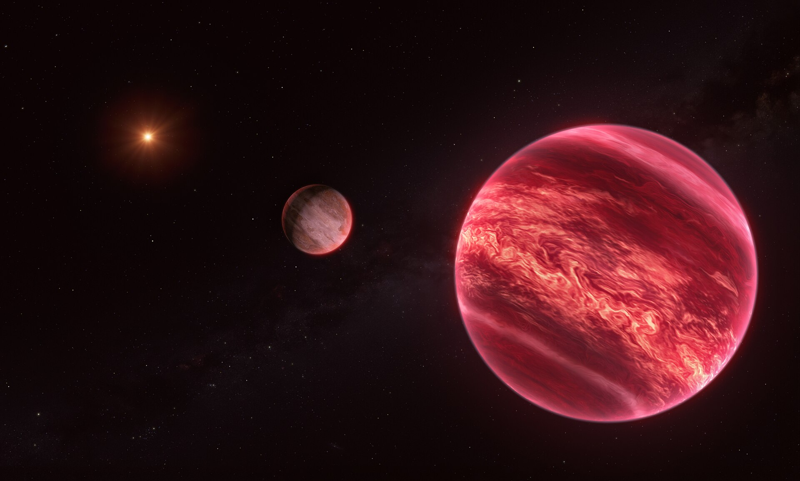

Credit: ESO/M. Kornmesser
Overview
In July 2026, astronomers reported strong evidence for a Jupiter-mass object orbiting CD-35 2722 B, a brown dwarf about 71 light-years from Earth, in a paper led by Kevin Hoy and published in Nature. If this holds up, it would be the first moon-like object ever found outside the Solar System, though the strange setup has left astronomers arguing over what to actually call it.
The system
At the centre of the system is CD-35 2722 A, a young star with roughly half the mass of the Sun. It's orbited by CD-35 2722 B, a brown dwarf about 30 times the mass of Jupiter, first spotted through direct imaging in 2009 and confirmed as a real companion in 2011. Brown dwarfs sit in an odd middle ground between planets and stars: too heavy to count as a planet, but not heavy enough to burn hydrogen the way real stars do.
The new discovery
Using the radial velocity method, the same technique first used to find an exoplanet around a Sun-like star back in 1995, astronomers studied light coming from CD-35 2722 B itself, using the CRIRES+ instrument on ESO's Very Large Telescope. They picked up a repeating signal that matches an object roughly Jupiter's mass orbiting the brown dwarf, rather than the brown dwarf orbiting its star.
Why it's hard to classify
In the Solar System, the rules are simple: planets orbit the Sun, and moons orbit planets. The CD-35 2722 system breaks that pattern completely. The newly found object is heavy enough to count as a planet on its own, yet it doesn't orbit a star directly; it orbits a brown dwarf that itself orbits a star. Some researchers have suggested calling an object like this an "exosatellite" instead of an exomoon, since the word exomoon was originally meant for something orbiting a planet, not a brown dwarf.
Still being confirmed
Even with all the excitement, the team behind the discovery has been careful to call this strong evidence rather than a final answer. Earlier possible exomoons, including ones proposed around Kepler-1625 b and Kepler-1708 b, were also announced with early confidence before running into long arguments among scientists. Some astronomers think the CD-35 2722 object should just be called a planet, not any kind of moon. Working out exactly what it is will likely need more observations, along with better models of how a satellite this heavy could have formed and stayed in a stable orbit.
Why it matters
Out of more than 6,000 confirmed exoplanets, no exomoon of any kind has ever been fully confirmed, despite years of searching, so even one well-supported example would be a big deal. Beyond the argument over what to name it, a confirmed satellite like this could teach scientists a lot about how planet-sized objects form and change around companions that aren't quite full stars.